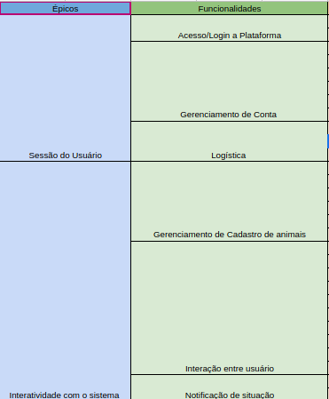
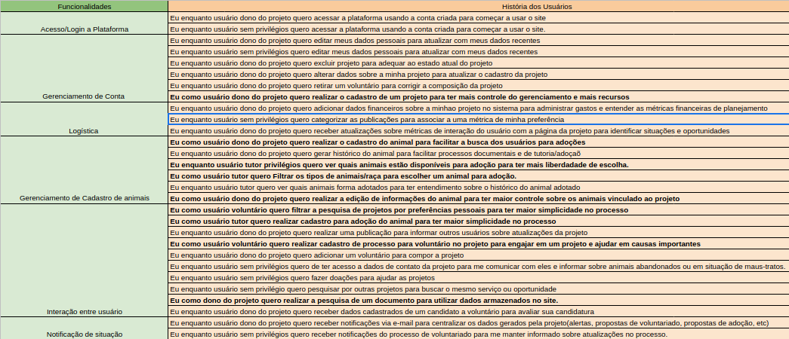

Backlog
Histórico de Versão
| Data | Versão | Descrição | Autor(es) |
|---|---|---|---|
| 18/07/2022 | 0.1 | Criação do documento | Pedro Helias, Rhuan, Daniel |
| 18/07/2022 | 0.2 | Alteração nas histórias de usuário | Pedro Helias. Gabriel |
Backlog
A partir do levantamento do requisitos, foi construída uma estrutura com a organização proposta pela SAFe para definir o Backlog do produto.
Temos então como Épicos e Funcionalidades: 
Já como as histórias do usuário associadas a suas funcionalidades, temos: 
Abaixo o documento é descrito para melhor visualização:
Épico: Sessão do Usuário
Acesso/Login a Plataforma
-
US-01: Eu enquanto usuário dono do projeto quero acessar a plataforma usando a conta criada para começar a usar o site
-
US-02: Eu enquanto usuário sem privilégios quero acessar a plataforma usando a conta criada para começar a usar o site.
Gerenciamento de conta
-
US-03: Eu enquanto usuário dono do projeto quero editar meus dados pessoais para atualizar com meus dados recentes
-
US-04: Eu enquanto usuário sem privilégios quero editar meus dados pessoais para atualizar com meus dados recentes
-
US-05: Eu enquanto usuário dono do projeto quero excluir projeto para adequar ao estado atual do projeto
-
US-06: Eu enquanto usuário dono do projeto quero alterar dados sobre a minha projeto para atualizar o cadastro da projeto
-
US-07: Eu enquanto usuário dono do projeto quero retirar um voluntário para corrigir a composição da projeto
-
US-08: Eu como usuário dono do projeto quero realizar o cadastro de um projeto para ter mais controle do gerenciamento e mais recursos
Logística
-
US-09: Eu enquanto usuário dono do projeto quero adicionar dados financeiros sobre a minhao projeto no sistema para administrar gastos e entender as métricas financeiras de planejamento
-
US-10: Eu enquanto usuário sem privilégios quero categorizar as publicações para associar a uma métrica de minha preferência
-
US-11: Eu enquanto usuário dono do projeto quero receber atualizações sobre métricas de interação do usuário com a página da projeto para identificar situações e oportunidades
Épico: Interatividade com o sistema
Gerenciamento de cadastro de animais
-
US-12: Eu como usuário dono do projeto quero realizar o cadastro do animal para facilitar a busca dos usuários para adoções
-
US-13: Eu enquanto usuário dono do projeto quero gerar histórico do animal para facilitar processos documentais e de tutoria/adoçaõ
-
US-14: Eu enquanto usuário tutor privilégios quero ver quais animais estão disponíveis para adoção para ter mais liberdadade de escolha.
-
US-15: Eu como usuário tutor quero Filtrar os tipos de animais/raça para escolher um animal para adoção.
-
US-16: Eu enquanto usuário tutor quero ver quais animais forma adotados para ter entendimento sobre o histórico do animal adotado
-
US-17: Eu como usuário dono do projeto quero realizar a edição de informações do animal para ter maior controle sobre os animais vinculado ao projeto
Interação entre usuário
-
US-18: Eu como usuário voluntário quero filtrar a pesquisa de projetos por preferências pessoais para ter maior simplicidade no processo
-
US-19: Eu como usuário tutor quero realizar cadastro para adoção do animal para ter maior simplicidade no processo
-
US-20: Eu enquanto usuário dono do projeto quero realizar uma publicação para informar outros usuários sobre atualizações da projeto
-
US-21: Eu como usuário voluntário quero realizar cadastro de processo para voluntário no projeto para engajar em um projeto e ajudar em causas importantes
-
US-22: Eu enquanto usuário dono do projeto quero adicionar um voluntário para compor a projeto
-
US-23: Eu enquanto usuário sem privilégios quero de ter acesso a dados de contato da projeto para me comunicar com eles e informar sobre animais abandonados ou em situação de maus-tratos.
-
US-24: Eu enquanto usuário sem privilégios quero fazer doações para ajudar as projetos
-
US-25: Eu enquanto usuário sem privilégio quero pesquisar por outras projetos para buscar o mesmo serviço ou oportunidade
-
US-26: Eu como dono do projeto quero realizar a pesquisa de um documento para utilizar dados armazenados no site.
-
US-27: Eu enquanto usuário dono do projeto quero receber dados cadastrados de um candidato a voluntário para avaliar sua candidatura
Notificação de situação
-
US-28: Eu enquanto usuário dono do projeto quero receber notificações via e-mail para centralizar os dados gerados pela projeto(alertas, propostas de voluntariado, propostas de adoção, etc)
-
US-29: Eu enquanto usuário sem privilégios quero receber notificações do processo de voluntariado para me manter informado sobre atualizações no processo.
O documento foi construído numa planilha de Excel virtual, presente no link abaixo.